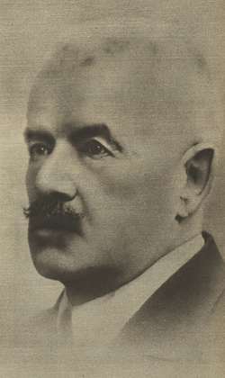

Slavná osobnost: Petr Bezruč
| Portrét | Základní údaje | Významné činy | |
|---|---|---|---|
|  | Petr Bezruč | Významný český spisovatel Žil v Ostravě a napsal Slezské písně Díla: Labutinka, Jen jedenkrát , Maryčka Magdónova, Ostrava, Návrat, a další. |
|
| 1867, Opava | 1958, Olomouc | ||
| Český spisovatel. Chodil na Slovanské gymnázium v Brně, Nejhorší prospěch měl z němčiny, matiky a zpěvu. |
|||
| Petr Bezruč | |||
| Odkaz na Wikipedii | |||
Značky Tabulky
- colspan
- Atribut zajišťující rozpětí přes několik sloupců.
- rowspan
- Atribut zajišťující rozpětí přes několik řádků.
- tr
- Vytvoření řady tabulky